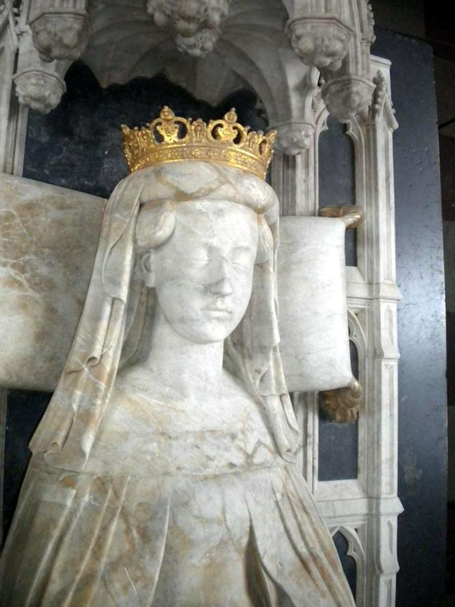
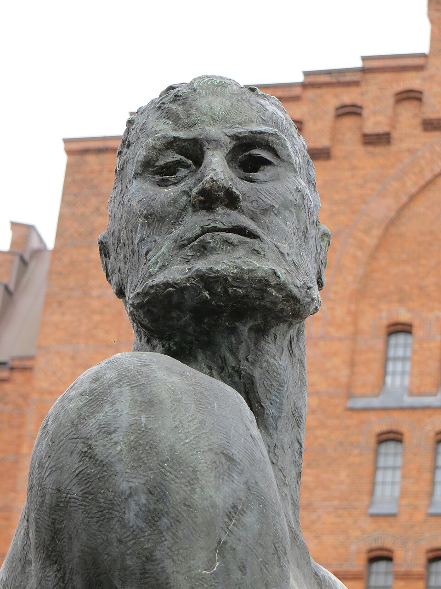
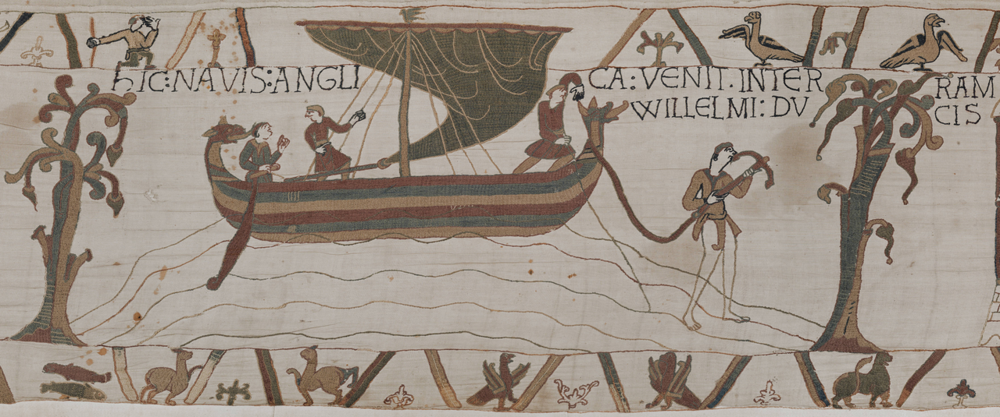

Art der Piraterie
Im Mittelalter verschwimmen die Grenzen zwischen Raub, Krieg und Handel. Typisch waren schnelle Überraschungsangriffe auf Küsten, Klöster und Flussstädte, oft mit flachen Langschiffen oder später mit stärker bemannten Handelsschiffen. Im Norden und in der Ostsee brachten Wikingerflotten Beutezüge tief ins Binnenland. Im Mittelmeer mischten sich islamische und christliche Flottenangriffe, Geisel- und Sklavenraub sowie lokaler Küstenraub. Im Spätmittelalter kamen Kaperbriefe hinzu: Landesherren und Städte autorisierten Kapitäne, Feinde anzugreifen. Setzten diese ihre Räubereien im Frieden fort, galten sie als Piraten. Gruppen wie die Vitalienbrüder / Likedeeler teilten Beute oft zu gleichen Teilen und bedrohten den Hansehandel in Nord- und Ostsee.
Hauptcharaktere


- Wikingeranführer und -flotten (ca. 8.–11. Jh.): keine einheitliche „Piratenbande“, sondern skandinavische Krieger und Seefahrer auf Raub-, Handels- und Siedlungsfahrten.
- Königin Margarethe I. / König Albrecht von Schweden: Konflikte, in deren Kontext Vitalienbrüder als Versorger und Kaperfahrer angeheuert wurden.
- Klaus Störtebeker (Legendengestalt; historisch oft mit Johann Stortebeker / Vitalienbrüdern verknüpft): In der Überlieferung Anführer der Likedeeler, angeblich 1401 in Hamburg hingerichtet. Historisch gesichert ist vor allem die Figur eines Kapitäns und Gewaltakteurs um 1400; die dramatische Hinrichtungslegende ist später ausgeschmückt.
- Gödeke Michels, Hennig Wichmann, Magister Wigbold: in Chroniken genannte Anführer bzw. Gefährten der Likedeeler.
- Sarazenische / islamische Flottenführer und spätere Korsarenmilieus im Mittelmeer (7.–15. Jh.): Raub und Seekrieg von Nordafrika, Iberien und Inselstützpunkten aus.
- Italienische Seemächte (v. a. Venedig, Genua) sowie Kreuzfahrer und Ordensritter: bekämpften Piraterie, betrieben aber selbst oft kaperähnliche Gewalt zur See.
Was geschah

Ab dem späten 8. Jahrhundert erschütterten Wikingerüberfälle Europa: Lindisfarne 793 gilt als Symbolstart; später folgten Angriffe auf Dorestad, Paris, Hamburg und Züge bis ins Mittelmeer und nach Osteuropa. Parallel stiegen mit der islamischen Expansion arabische Flottenangriffe auf byzantinische und westliche Küsten. In der Adria störten Narentaner den Handel, bis Venedig die Region stärker kontrollierte.
Nach der Wikingerzeit blieb Ost- und Nordsee unruhig: westslawische und baltische Küstengruppen raubten, die Hanse wehrte sich mit Konvois und Strafexpeditionen. Ende des 14. Jahrhunderts versorgten Vitalienbrüder zunächst belagertes Stockholm und kämpften im Seekrieg; von Gotland aus verselbstständigten sie sich zu gefürchteten Seeräubern („Gottes Freund und aller Welt Feind“). 1398 vertrieb sie der Deutsche Orden von der Insel; danach operierten Likedeeler von Ostfriesland aus, bis hamburgische Schiffe sie um 1401 schlugen. Im Mittelmeer dauerten christlich-muslimische Korsarenkonflikte bis in die Frühe Neuzeit.
Wie begann es
Nach dem Ende der römischen Seeordnung fehlte lange eine durchgängige maritime Polizei. Bevölkerungsdruck, Schiffbautechnik (Langschiffe) und schwache Küstenverteidigung begünstigten Wikingerzüge. Im Mittelmeer öffneten Machtwechsel (Kalifat, Byzanz, italienische Stadtstaaten) und lukrative Handelsrouten Raum für Raub und staatlich geduldete Beutefahrt. Kriege und Fehden machten Kaperfahrer zu einem billigen Werkzeug der Politik: Wer im Krieg nützlich war, konnte im Frieden zum Piraten werden.
Wie endete es
Ein scharfes Ende gab es nicht. Die klassische Wikingerzeit ebbte im 11. Jahrhundert ab, als Königtum und Christianisierung Raubfahrten stärker einhegten und viele Krieger in reguläre Heere übergingen. Die Vitalienbrüder / Likedeeler wurden um 1400 von Hanse und Territorien zurückgedrängt, lokale friesische Piraterie blieb aber noch Jahrzehnte ein Ärgernis. Im Mittelmeer ging mittelalterlicher Seeraub nahtlos in das frühneuzeitliche Korsarenwesen über (Barbaresken, Malteser u. a.). Das Mittelalter endet also nicht mit „keine Piraten mehr“, sondern mit einer Verlagerung: von offenen Raubflotten hin zu stärker staatlich gerahmter Kaperfahrt und neuen Schauplätzen.
Quellen
- Wikipedia – Geschichte der Piraterie: https://de.wikipedia.org/wiki/Geschichte_der_Piraterie
- Wikipedia – Piraterie / Seeräuberei: https://de.wikipedia.org/wiki/Seeräuberei
- Wikipedia – Wikingerzeit: https://de.wikipedia.org/wiki/Wikingerzeit
- Wikipedia – Klaus Störtebeker: https://de.wikipedia.org/wiki/Klaus_Störtebeker
- L.I.S.A. / Gerda-Henkel-Stiftung – Vitalienbrüder (Forschungsüberblick Gregor Rohmann): https://lisa.gerda-henkel-stiftung.de/vitalienbrueder?nav_id=7922
- World History Encyclopedia – Timeline Piracy (mittelalterliche Einträge im Gesamtüberblick): https://www.worldhistory.org/timeline/Piracy/
- Bildquellen: Wikimedia Commons – Oseberg-Schiff (CC BY-SA 3.0, Vassia Atanassova / Spiritia); Teppich von Bayeux, Szene 34 (Public Domain); Effigie Margarethe I. (Public Domain); Störtebeker-Statue Hamburg (CC BY-SA 3.0, Soenke Rahn).